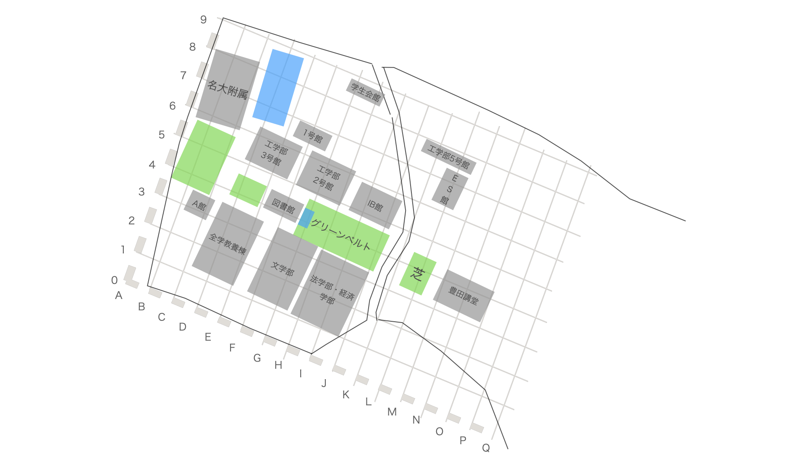
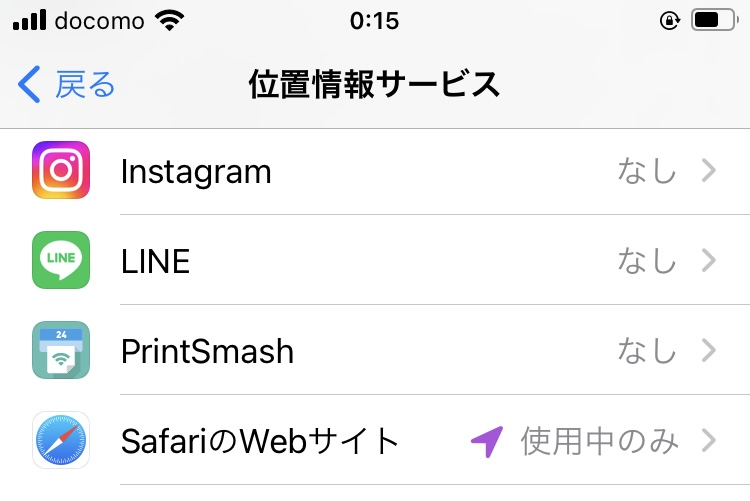

NU掲示板
名古屋大学生の便利ツール
入室可能な部屋一覧です。正常に表示されない場合はしばらくお待ちください。 表示されない場合、位置情報取得の権限を確認するか、入室可能な場所(全学教養棟など)に移動してからもう一度お試しください。
チャットルーム一覧が表示されるまでお待ちください
おしらせ
名大新着ニュース
チャットルームの選び方は、下の地図の行/列の番号を参照してください

#各チャットルームは、行/列に対応した2直線の交差点を中心に持った円形の領域です
NU掲示板とは
NUCT
を超える便利ツールを目標に作られた非公式サイトです。
・名大生同士の交流を目的としたチャット機能を設け、
・名古屋大学に関連するWEBサービスやTwitterアカウント、
・名大生にオススメの活動スポットを紹介します。
How To Use
チャットルームに入ると同じ時間、同じ場所にいる人たちとリアルタイムで交流できます。
位置情報を使用するので、お使いのブラウザで位置情報を有効にしてください。

名大関連のWEBサービス一覧
カテゴリを選択
CLOSE
適用
表示するwebサイトのカテゴリを選択
すべて
学業
勉強
エンターテイメント
便利
SNS
公式
生活
表示されない場合は
ここをクリック
名大生にオススメの活動スポット
カテゴリを選択
CLOSE
適用
表示するPlayGroundサイトのカテゴリを選択
すべて
学業
大学内
飲食
暇つぶし
エンターテイメント
生活-スーパー-コンビニ
ショッピング
施設
運動
表示されない場合は
ここをクリック
Privacy Policy
Twitter